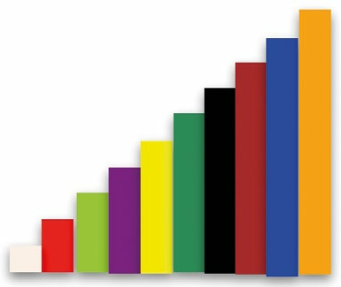

At Bursted Wood Primary School, children in key stage 1 had already embarked on a secure mathematical journey, putting algebra at the heart of the curriculum. The demands of the 2014 National Curriculum meant that in Year 1 children were expected to be taught to use all four arithmetic operations, and fractions, as operators. As a result, Bursted Wood adopted a series of textbooks written by Caleb Gattegno called Numbers in Colours. These textbooks use Cuisenaire rods to encourage the learner to explore patterns, and then to give letter code names to the patterns, and record the relationships between them with equations. It is only after the letter code exploration that they finally use a rod as a unit of measure (e.g. white representing one), and transform their equations into arithmetic. Very early on in Year 1, children are able to read and write a variety of complex algebraic
as a staircase with step size White
equations using plus, minus, multiply, and fractions as operators, and translate these into arithmetic. The results had been impressive throughout key stage 1. In Year 2 we wanted to take it a step further by running computing lessons using the same use of natural language and level of sophistication.
Why Haskell?
Haskell is closely aligned to conceptual mathematics and number theory, the inspiration for Gattegno Mathematics. It has four attributes that make it particularly appropriate for mathematics education:- Its syntax is very close to traditional mathematical notation (but beware that it can be too terse).
- Variables are statically typed, which means that programmers are protected by the compiler from passing invalid information as an argument (input) or output value.
- The Haskell interpreter evaluates functions ‘lazily’, only when required. This makes it possible to program infinite data structures in finite memory.
- Information is passed from the arguments to functions by pattern matching. This is an intuitive way for programmers to envisage and reason about the behaviour of their programs.